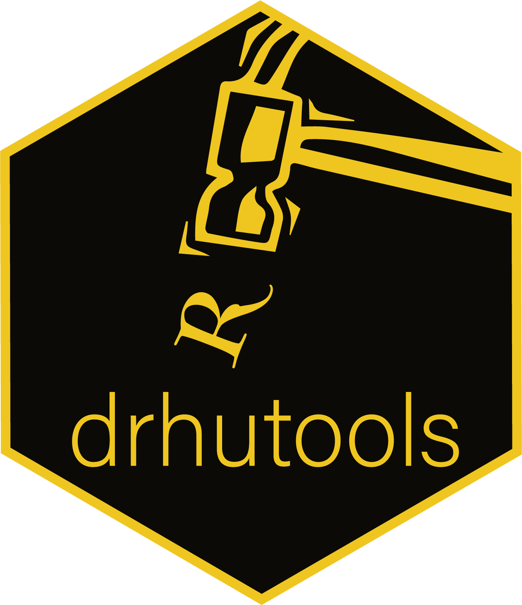

Open Manual for Dr. Hu’s Amazing Team

前言
亲爱的朋友：
如果你正打算阅读这本Open Manual for Dr. Hu’s Amazing Team，那说明你正逢和一个非常棒的团队合作的机会。 我们队伍中的成员来自五湖四海，但都对基于政治认知解密政治态度、政治身份、政治传播和社会经济不平等的议题抱有兴趣。 大家秉承“立场坚定、个性自由”的共识和严守科学规范的操守，为有趣的题目、为自身的发展（当然，也为情怀）而进行政治科学研究。 既能百花齐放，也有同心协力。
为了组内成员能够有效交流，高效合作，我编纂了这本小册子。 希望新加入的你能通过阅读和学习，在操作层面更好融入我们的工作流程，实现顺畅合作，最终达成你和团队的共同成长。 有一点有必要说明，这本小册子的目的不在于“一本在手，天下我有”。 它不会囊括技术的所有方面，而更多地是结合本组研究特性的一些专门特点和设置介绍。 特别是一些基础设置知识会加以省略。 所以你要想完全掌握这里提到的技术，还需要参考其他资源或提前熟悉。
胡悦
2022-07-15于清华园